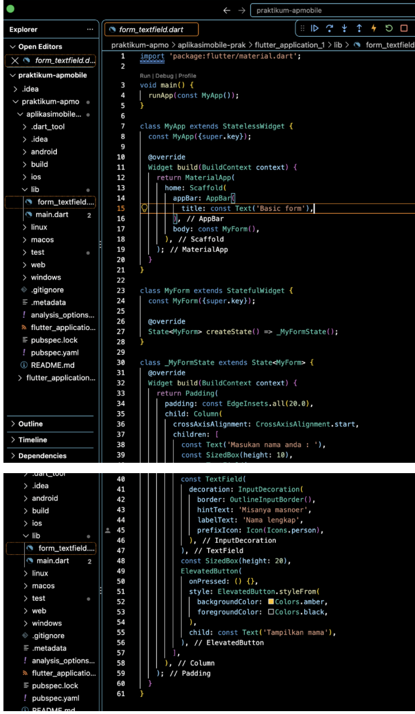
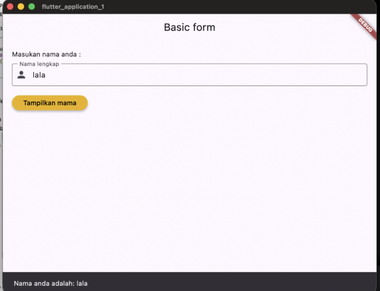
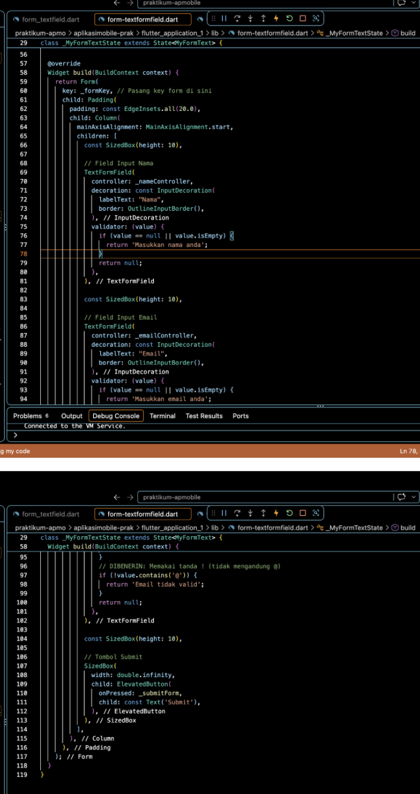
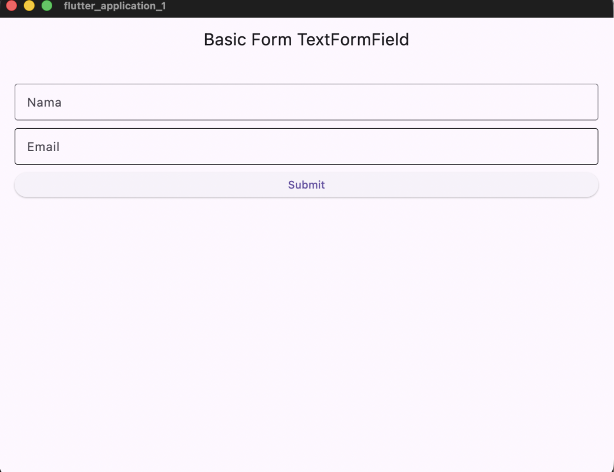
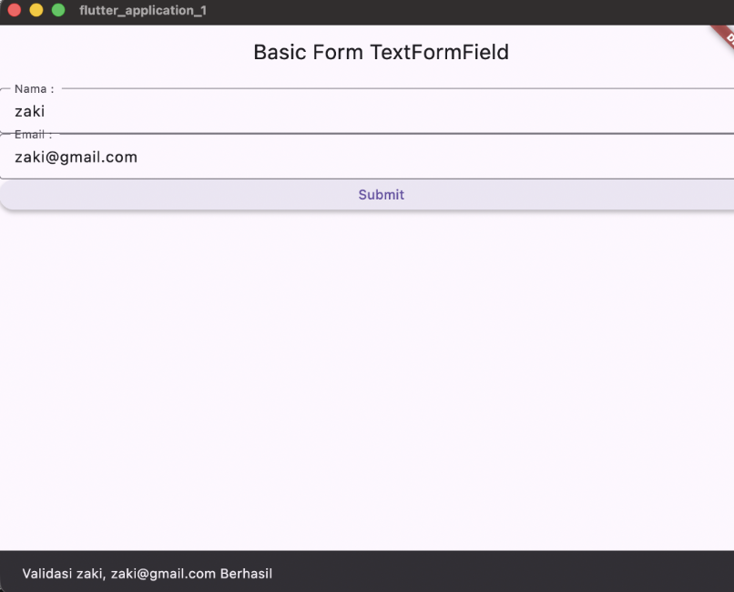
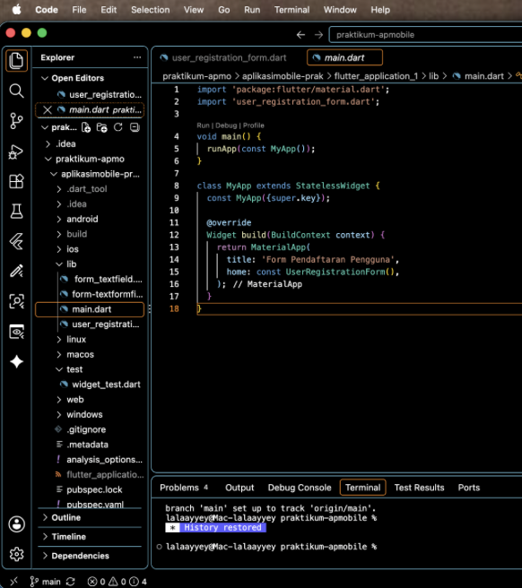
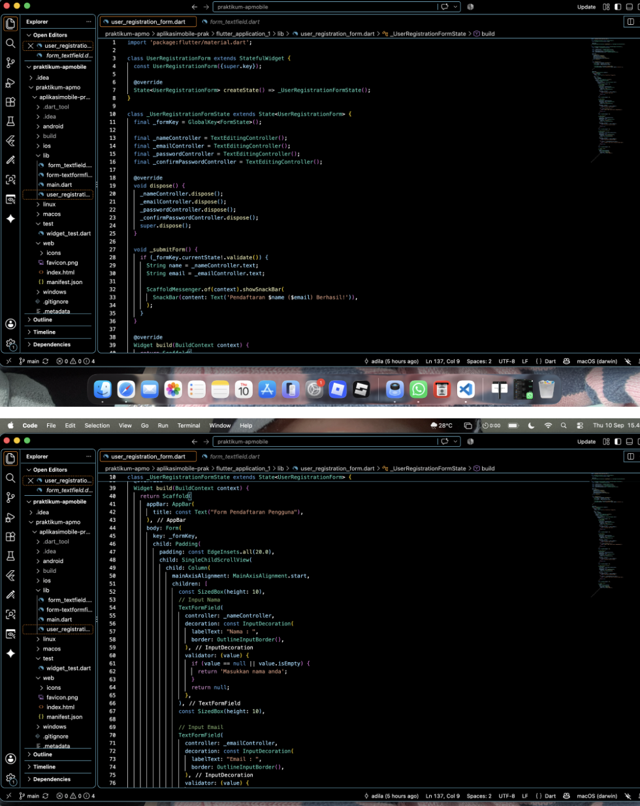
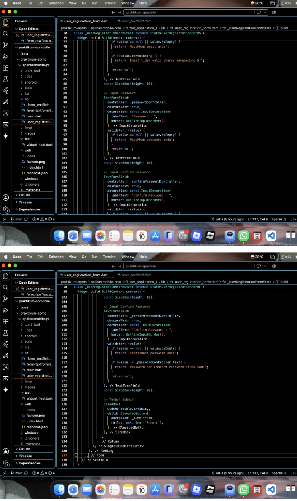
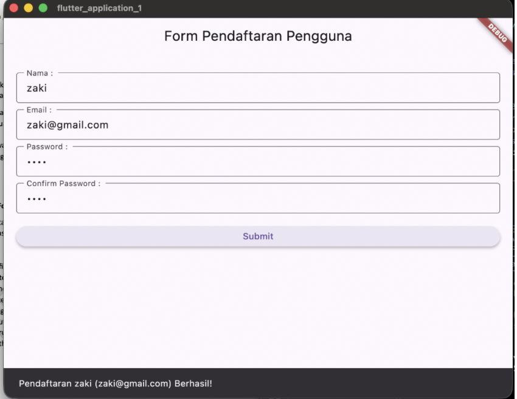

PRAKTIKUM 1: Input Widgets dan Basic Form pada Flutter
NIM: 2411533019 - Adila Bintang Fauzi
Pengembangan aplikasi mobile modern menuntut pengelolaan interaksi pengguna yang responsif, terstruktur, dan tervalidasi dengan baik. Pada framework Flutter, penanganan input dari pengguna dilakukan melalui komponen formulir dasar (Basic Form) dan Input Widgets, seperti TextField, TextFormField, CheckBox, Switch, Dropdown, Radio, DatePicker, hingga komponen antarmuka dialog pendukung seperti BottomSheet dan SnackBar. Komponen-komponen ini berfungsi menangkap data, menampilkan field input, memvalidasi format data secara akurat, serta mengambil nilai inputan untuk diproses pada tingkat logika aplikasi.
Dalam praktik pengembangannya, Flutter menyediakan dua komponen utama untuk menangani input teks, yaitu TextField dan TextFormField. TextField digunakan untuk penangkapan teks sederhana secara langsung dari keyboard dengan pengelolaan state mandiri via TextEditingController, di mana validasi dan pesan kesalahan harus ditangani secara manual. Sebaliknya, TextFormField merupakan widget pembungkus TextField yang terintegrasi langsung dengan logika Form. Komponen ini dilengkapi dengan properti bawaan validator untuk memeriksa aturan input secara otomatis dan menampilkan pesan kesalahan di bawah field jika data tidak sesuai, serta dapat dikontrol secara terpusat menggunakan FormState.
Pengelolaan formulir yang efisien di Flutter ditopang oleh beberapa komponen kunci. TextEditingController digunakan untuk mengontrol dan membaca teks pada input field, yang mana wajib dibersihkan melalui metode dispose() untuk mencegah kebocoran memori (memory leak). Untuk mengidentifikasi dan mengakses status dari Form dari luar widget, digunakan GlobalKey<FormState>. Status ini menyediakan fungsi validate() yang mengeksekusi seluruh validator TextFormField di dalam Form secara kolektif—menghasilkan nilai true jika seluruh data valid atau false jika terdapat kesalahan. Selain itu, pembaruan antarmuka saat terjadi perubahan state ditangani oleh metode setState(), sedangkan optimasi memori dan performa reloading aplikasi dicapai dengan menerapkan kata kunci const pada widget konstan saat kompilasi.
TextEditingController.TextFormField, FormState, dan GlobalKey.dispose()), serta peremajaan antarmuka menggunakan setState().
Berikut merupakan kode program dan hasil pengujian pembuatan form dasar menggunakan TextField untuk mengambil input nama dan menampilkannya pada SnackBar:


Berikut merupakan kode program terstruktur menggunakan Form, GlobalKey<FormState>, serta validasi untuk input Nama dan Email beserta hasil pengujiannya:



Tugas Kelas B: Form Pendaftaran Pengguna
Membuat form pendaftaran pengguna yang terdiri dari 4 field: Nama, Email, Password, dan Confirm Password dengan kriteria:
main.dart dan user_registration_form.dart.@', serta Password dan Confirm Password harus cocok/sama.StatefulWidget dan pemanggilan fungsi _submitForm() saat tombol submit ditekan.


Tampilan antarmuka Form Pendaftaran Pengguna beserta notifikasi SnackBar saat validasi berhasil:

Berdasarkan hasil praktikum yang telah dilakukan, dapat ditarik beberapa kesimpulan penting sebagai berikut:
TextField sangat cocok digunakan untuk input sederhana tanpa aturan validasi kompleks, sedangkan TextFormField lebih direkomendasikan untuk pengembangan form interaktif yang membutuhkan pengujian atribut data secara terstruktur.
GlobalKey<FormState> terbukti mempermudah akses status Form secara kolektif, sehingga pemanggilan fungsi validate() dapat mengeksekusi seluruh fungsi validator di setiap input field secara simultan dan efisien.
TextEditingController harus diiringi dengan pemanggilan metode dispose() pada lifecycle StatefulWidget untuk melepaskan resource yang digunakan dan menghindari kebocoran memori (memory leak).
main.dart dan user_registration_form.dart) meningkatkan kerapian struktur kode (clean code), keterbacaan (readability), serta mempermudah pemeliharaan dan pengembangan aplikasi Flutter di masa mendatang.